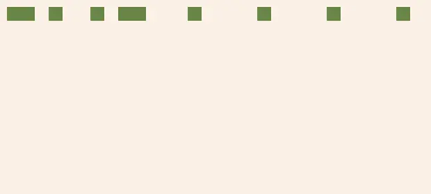
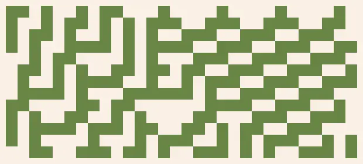
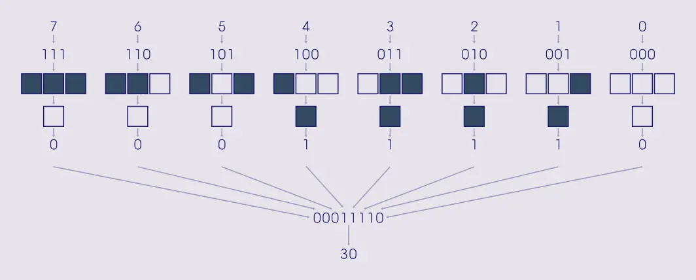

Найпростіші клітинні автомати
Поняття автомата
Абстрактний автомат
Якщо говорити коротко, то автомат — це будь-яка річ, яка може знаходитись в в певному стані, та змінює його на інший, відповідно до певних правил. Практично все на світі може підпадати під таке, дуже абстрактне, визначення. Головна користь від цього поняття — якщо ми уявимо якусь систему як автомат, то ми зможемо сконцентруватись правилах її поведінки, не забиваючи свою голову конкретними деталями.
В цій та наступних статтях, ми взагалі не розглядатимемо теорію автоматів у прив'язці до справжнього світу а, радше, подивимось на красу самих автоматів. Зазвичай, ця краса виражається у створенні абстрактних малюнків.
Клітинні автомати
Клітинними автоматами називають автомати, які працюють великими групами, де кожен автомат знає лише про невелику частину своїх сусідів.
У найпростішому випадку, клітинний автомат — це рядок із автоматів-клітин, кожен з яких, знаходиться в одному, із наперед заданого набору, стані. Наглядно, кожен зі станів можна показати як колір. А сам автомат — як рядок кольорових клітинок. Кожна клітинка знає свій колір (стан) та кольори (стани) своїх сусідів. Також, існує певний набір правил, за яким, на основі власного та сусідніх станів, клітинка може обрати свій новий стан. При цьому, для кожної з клітинок ці правила однакові. І застосовуються вони для всіх клітинок одночасно.
Не зважаючи на те, що правила дуже прості а жодна з клітинок не знає про всю систему загалом, їх сумарна поведінка може бути дуже складною. Цим вони завдячують такій особливості нашого всесвіту, як емерджентність. Прості речі разом можуть збиратись у щось більше ніж просто у свою суму.

Напевно, вам важко встежити за розвитком автомата коли він зображений як анімація. Краще відображати історію його розвитку рядок за рядком, згори до низу: так зрозуміліше.

Надалі, всі одновимірні автомати будуть подані як статичні зображення їх розвитку.

Тоталістичні клітинні автомати
Правила
Одне з найпростіших сімейств клітинних автоматів — тоталістичні автомати. Новий стан кожної з його клітинок визначається за станом цієї ж клітинки, а також двох її безпосередніх сусідів. Тобто, кожна клітинка залежить від трьох клітинок: себе і двох сусідів.
Як розшифрувати правила
Правила тоталістичних клітинних автоматів традиційно називають „Правило X“, де „X“ — це якесь число. Для тих, які ми розглядаємо в цій статті, це число лежить в межах від 0 до 255.
Щоб розшифрувати правила з числа, необхідно знати бінарну систему числення. Це число показує, як клітинка буде вести себе у всіх можливих випадках. Ці випадки перечислені з права на ліво. Ось схема розшифровки числа 30:

Групи правил
Всі правила можна поділити на чотири групи, залежно від поведінки системи.
Пусті світи
З такими правилами система не живе довго. Вже через декілька кроків всі клітинки приймають один з кольорів.
Статичні світи
Після певного проміжку часу, система або не змінюється взагалі, або змінюється періодично. Спостерігати за нею не дуже цікаво, так як вона дуже передбачувана.
Хаотичні світи
Майже одразу система стає зовсім непередбачуваною.
Структуровані світи
Світи з такими правилами, зберігають баланс між впорядкованістю й хаотичністю. Тому за ними цікаво спостерігати. Любителі клітинних автоматів саме й займаються тим, що шукають правила, які входять до цієї категорії.